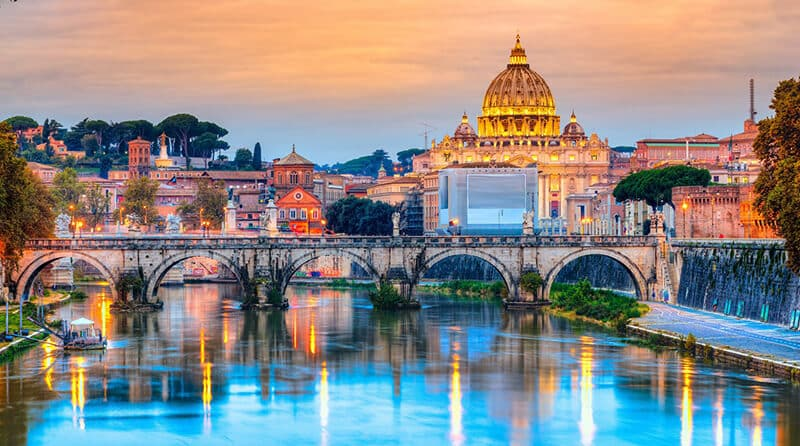

Bem-vindo à Itália
Explore as belezas, sabores e histórias de um dos países mais encantadores do mundo.

Sobre a Itália
A Itália é um país rico em cultura, história e paisagens deslumbrantes. Conhecida por suas cidades icônicas, gastronomia de renome mundial e obras de arte, é um destino imperdível.

Cultura e Curiosidades sobre a Itália
- Patrimônio da Humanidade: A Itália possui mais de 50 locais reconhecidos pela UNESCO, sendo um dos países com maior número de patrimônios culturais do mundo.
- Culinária Famosa: Pratos como pizza, pasta e gelato são ícones da gastronomia italiana, apreciados no mundo inteiro.
- Língua: O italiano deriva do latim e é falado por cerca de 85 milhões de pessoas no mundo.
- Moda: Cidades como Milão são líderes mundiais da moda, com eventos como a Milan Fashion Week.
- Arte e História: A Itália foi o berço do Renascimento, com artistas como Leonardo da Vinci, Michelangelo e Rafael.